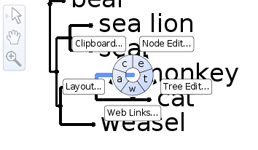
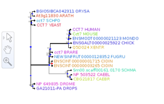

PhyloWidget Step-by-Step
PhyloWidget Step-by-Step is a series of instructional vignettes documenting the use of PhyloWidget, an open-source, web-based tree viewing program.
- If you are a biologist: we recommend starting with the First Step and moving forwards.
- If you are a developer: we recommend starting with the Last Step and moving backwards.
Step 1: Tree Gallery
- Explore the diversity of PhyloWidget configuations and visualizations
- Try out different combinations of settings and parameters
Step 2: Navigation
- Learn to use PhyloWidget for efficient navigation through large(ish) trees
Step 3: Labels
- Learn about the problem of displaying labels in trees
- Explore PhyloWidget's unique solution to the issue
Step 4: Search
- Search through trees with PhyloWidget
- Learn about PhyloWidget's search features and syntax

Step 5: Editing
- Use PhyloWidget to create a tree from scratch
- Read full documentation of the available tools for tree editing
- Learn to use PhyloWidget's keyboard shortcuts
Step 6: Menus
- Explore the full set of menus available in PhyloWidget
- Learn to use the unique number scroller menu items
- Read full documentation of the available options
Step 7: Input/Output
- Learn how to get trees in and out of PhyloWidget
- Read about Newick, NHX, and Nexus support
- Export PhyloWidget to various image formats including JPG, PNG< and PDF

Step 8: Annotation
- Annotate your trees with extra information
- See examples of NHX-enhanced tree visualization
Step 9: Web Links
- Use PhyloWidget to link out to other websites
- Create annotation-driven dynamic links
Step 10: Deployment
- Integrate PhyloWidget with your own server or website
- Choose between a URL API or direct applet integration
- So what are you waiting for? or return home